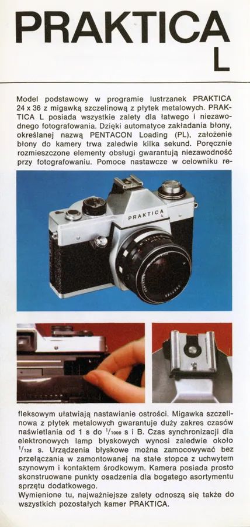
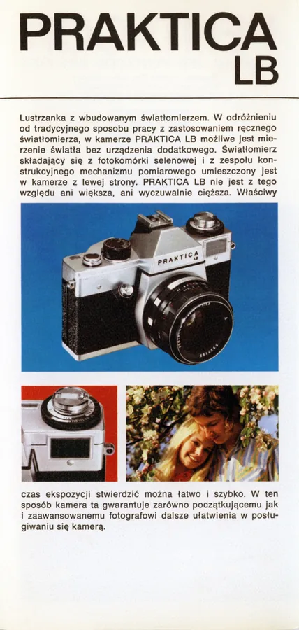
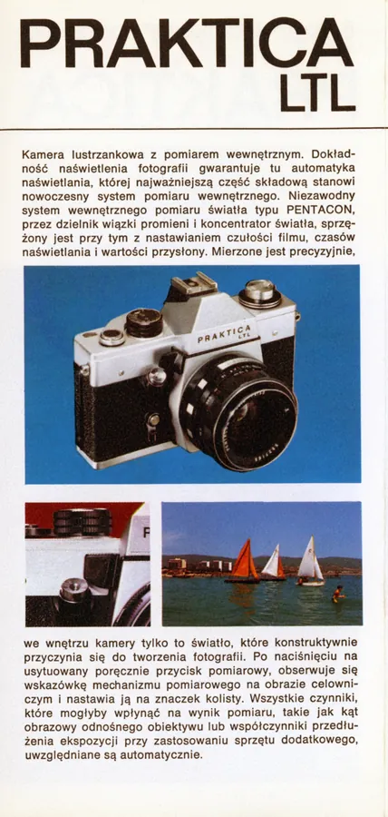
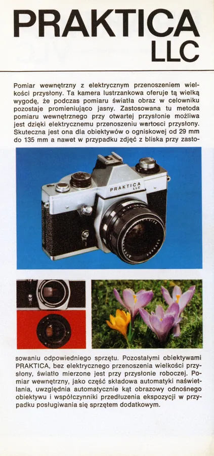
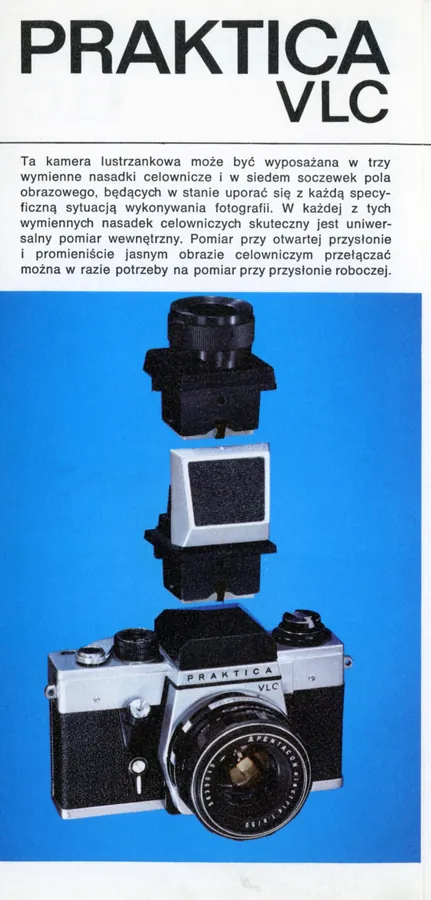
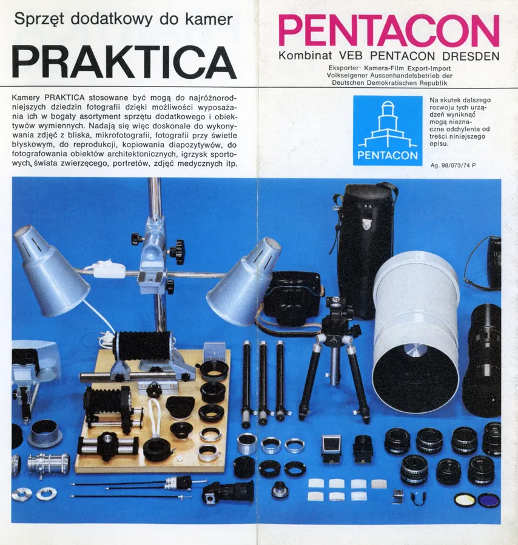

Przejdź do treści
Zenbliski
Menu
Archiwalne
Analogowe
Kolekcja
Akcesoria foto
Materiały reklamowe
Artykuły – blog
Foto ciekawostki
Cyfrowe
Materiały reklamowe
Foldery i prospekty
Praktica – precyzja lustrzankowa z Drezna, 1974 r., polski






Poprzednia
Praktica VLC, 1973 r., niemiecki
Następna
Praktica – Toebehoren, 1978 r., niderlandzki